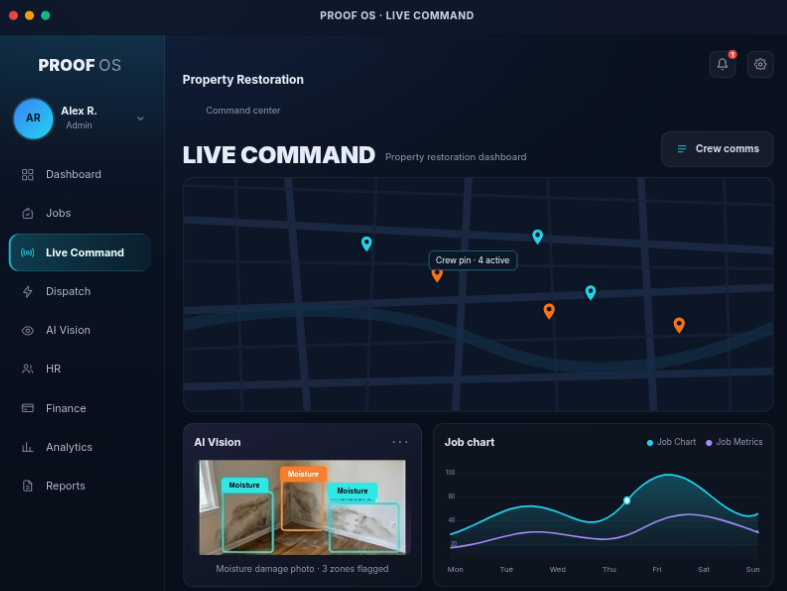

Proof replaces your office manager, your spreadsheets, and your 2am stress with one autonomous machine — built by field service operators, for field service operators.

Trusted by field service operators across North America
Every call answered in under 3 seconds — day or night. Proof understands natural language, captures job details, and dispatches the right crew automatically.
Proof answers every call in under 3 seconds, understands the situation, and creates a job — no human required.
Calls are scored by dollar potential and urgency, then routed to the best available crew in real time.
Job details, location, contact info, and urgency level captured automatically — synced to your live dashboard.
Point. Shoot. Proof's computer vision detects moisture, maps damage zones, and generates IICRC-compliant reports in seconds — no manual data entry.
Computer vision identifies affected materials, moisture levels, and severity — with bounding-box annotations on every photo.
First Notice of Loss, moisture maps, scope of work, chain of custody, psychrometric readings, drying logs, and final reports — all auto-generated.
Every photo, video, and document is timestamped, GPS-tagged, and stored in an immutable evidence vault for claim support.
Proof Pulse connects independent subcontractors to a live job board — rated, verified, and paid fast. Top-rated crews get priority dispatch on the best jobs.
Accept with one tap. Full job details, maps, and client info delivered instantly — no bidding wars, no chasing.
Every completed job builds your rating. Top-rated crews get priority on high-value emergency dispatches.
Proof handles payment processing — no invoicing, no chasing checks. Payment released on photo sign-off.
Every step happens without human intervention — from the first ring to the final payment. Scroll to watch the machine work.
A pipe burst floods a condo. The homeowner calls your number — Proof answers in under 3 seconds, before the second ring.
Natural language processing identifies water damage, Category 2 severity, and the urgency level. Proof confirms the address and sets expectations with the caller.
Proof scores the lead, creates a job in your dashboard, and dispatches the highest-rated available crew within range. The customer gets a text with crew ETA and tracking.
The crew chief opens Proof Vision on their phone, points the camera, and the system detects affected zones, maps moisture levels, and generates the First Notice of Loss.
All 7 IICRC-compliant documents are produced from the inspection data — moisture maps, scope of work, chain of custody, psychrometric readings, drying logs, and the final report.
One click exports the full evidence package to your TPA portal and insurance carrier. Documentation is timestamped, GPS-tagged, and audit-ready.
Photo sign-off triggers payment processing. The customer is invoiced, the crew is compensated, and your finance dashboard updates in real time.
See what changes when you replace spreadsheets, voicemail, and manual documentation with an autonomous platform.
"We went from 4 crews to 8 in 12 months. Proof captured $340K in after-hours calls we would have missed entirely. It paid for itself in the first month."
"Documentation went from 4 hours per job to 22 minutes. Claims process 2.3x faster. Our TPA actually called to ask what we changed — they'd never seen files this clean."
"Scaled from 2 to 6 crews across 3 cities without hiring an office manager. Everything runs from one dashboard. Proof is the reason we could grow without breaking."
Results are based on customer-reported data and may vary by company size, market, and usage. See full case studies for details.
Every tier unlocks more of the machine. Start where you are — scale when you're ready.
Free first year. Jobs land on your phone, Proof Vision makes you look pro, and you get paid fast.
Never miss another call. 24/7 AI answering, dual visual capture, and instant field reports.
Replaces your office manager. Full HR, finance, all 7 IICRC docs, and crew scheduling.
Multi-location command dashboard, enterprise analytics, and custom API integrations.
Proof isn't software you operate — it's software that operates for you. It answers calls, writes reports, and dispatches crews without human input. Traditional tools still need a human to use them; Proof replaces that human.
No. Proof forwards from your existing business number. Your customers call the same number they've always called — Proof just answers when you can't (or always, if you prefer).
Yes. Proof handles complex natural language, understands industry terminology (water categories, IICRC classes, equipment types), and has been trained on tens of thousands of real field service calls. It also knows when to escalate to a human.
Proof Vision runs in any phone browser — no app download required. Crews point, shoot, and the system does the rest. Most crews are fully onboarded in under 30 minutes.
Yes. Proof exports directly to major TPA portals and carrier systems in one click. Your documentation arrives formatted, timestamped, and audit-ready — no more manual portal entry.
You own your data, always. If you cancel, you can export everything — photos, reports, job history, customer records — in standard formats. We don't hold your data hostage.